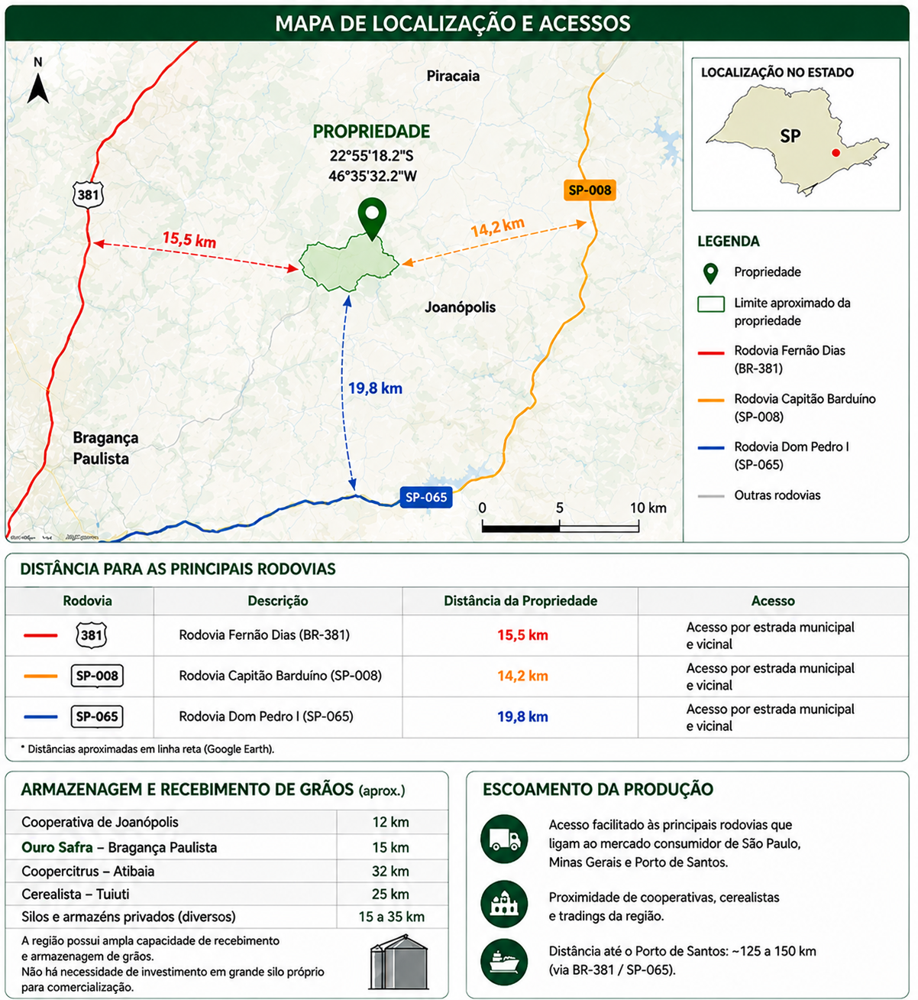

A Fazenda São Benedito está localizada no município de Bragança Paulista, Estado de São Paulo, em posição estratégica em relação às principais rodovias e centros de armazenagem e recebimento de grãos da região.
O mapa abaixo apresenta a localização aproximada da propriedade, as principais vias de acesso, as distâncias até as rodovias regionais e as principais estruturas relacionadas ao escoamento da produção agrícola.
